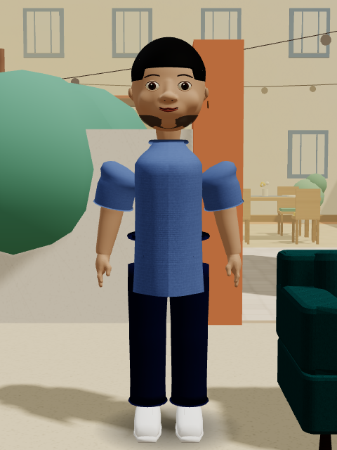

Uploaded buildNarrow torso, raised sleeves and a hard beard band.

Everyday lookConnected shoulders, loose cotton, clearer denim and a softer crop.

Ankara two-pieceConsistent motif scale, a shirt collar and separate relaxed trousers.

Kaftan setA continuous tunic hem, cloth collar and matching trousers.
The shared carry view
One view follows the full interaction. Separate views return when the sofa is set down.

Movement and a complete carry
Scripted regression replay, exported at 10 fps. The existing seedling crate was pushed clear before this clip. This is not a phone performance benchmark.
Front, side, back and walking pose
These are equipped meshes in the running game. The walking images are still poses; the replay above shows motion.
Phone layout checks
Chromium mobile emulation at 430 × 932 and 932 × 430; physical phones and remote multiplayer were not tested.